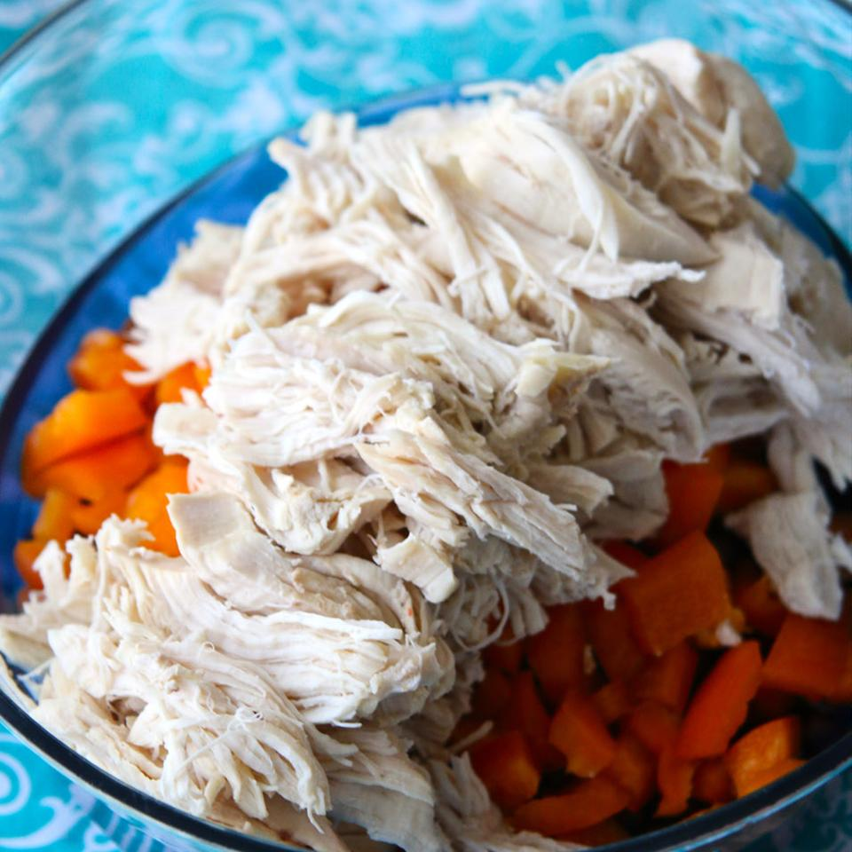

Boil Chicken

How To Prepare Boiled Chicken
Many recipes call for "cooked chicken" in the ingredient
list, whether that's cubed, sliced, or shredded. Although
using a rotisserie chicken is a good way to add cooked
chicken to any meal, if you have some extra raw chicken
on hand you can easily boil it and add it to a variety
of dishes.
1 whole chicken or 4 boneless chicken breasts
4 cups water or chicken broth (enough to cover)
3 carrots, cut into chunks-unpeeled
Steps
Place the chicken in a large pot, along with the onions,
carrots, celery, and peppercorns. Add water or broth to cover.
Cover the pot and bring to a boil. Reduce heat to a gentle boil.
For a whole chicken cook for about 90 minutes. For boneless chicken
breasts, cook for 15 minutes or until no longer pink.
Remove chicken, let cool and shred with a fork or chop the meat using
a knife.